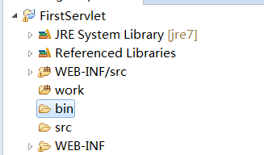

Maven Notes: Basic Operations
Let’s talk about the famous command
Talking about maven, many people will think about the following command:
|
|
When should we use this command? Based on my past experience:
1) Before you deploy your application onto cloud platform;
2) After you adding a new file or copy a new file into your project. Just remember, if you use Eclipse to manage your maven project, sometimes Eclipse will take care of it, sometimes it will not. So, always be a good habit to compile before you use.
Web Application with Maven
During the IBM hackton experience, I spent an afternoon on getting direction of how to modify the setting of Tomcat when Tomcat is organized under Maven.
Usually, when you use maven to create a web application, you can use following command:
|
|
It will automatively generate the following files:
|
|
If you know Tomcat well, you can easily tell that there are some files have the same names as tomcat. If you create a Tomcat project at Eclipse, you will have following files:

You can see what different between maven and native Tomcat is you need to have main and test folders under src. Also, the WEB-INF and the web.xml under it are in the main folder. web.xml is the folder you need to map the servlets and set the welcome page.
How about pom.xml file
What makes maven amazing is we can use many libraries without downloading it to local and managing them by ourselves. Maven takes care of those for you. For example, if you want to use google’s gson library to process JSON, you can just type following script into ‘pom.xml’ then you can directly use gson after you type ‘import com.google.gson.Gson’ in your Java source file.
|
|
You can find all the libraries on ‘https://mvnrepository.com/‘. Each library has the sample of how to type its dependency script into pom.xml.